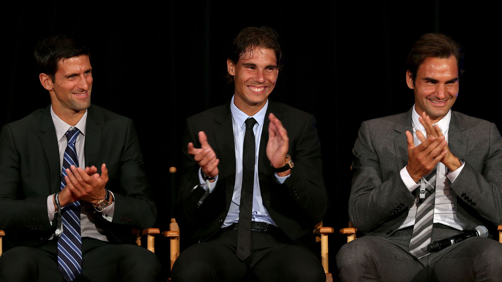
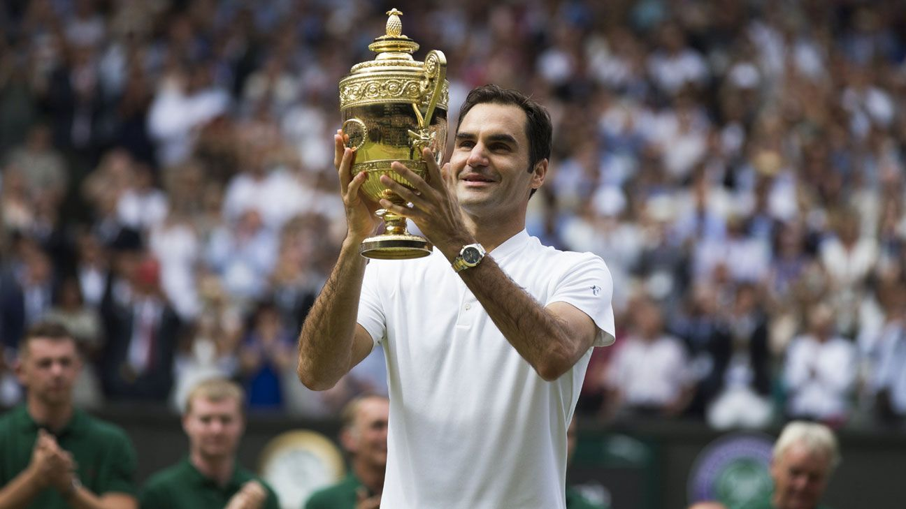
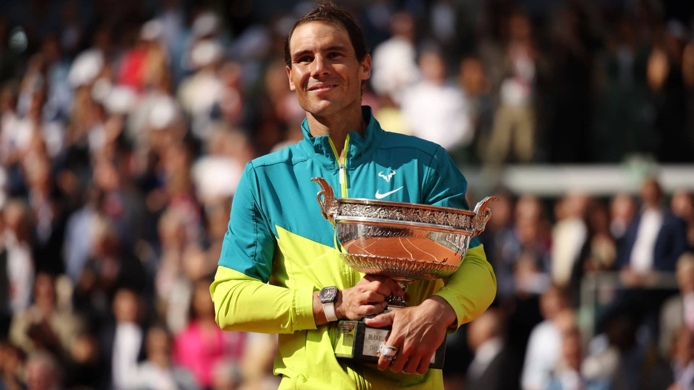
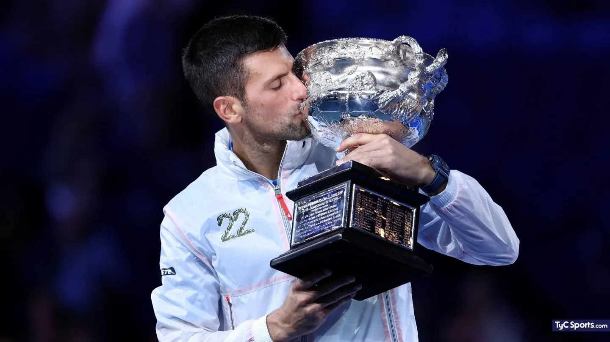

¿Cómo y cuándo nació el icónico 'Big 3'?

Roger Federer, Rafael Nadal y Novak Djokovic protagonizaron una época dorada
del tenis que enalteció al deporte y lo llevó a altos niveles de popularidad gracias la rivalidad que los impulsó al límite dentro de las canchas más prestigiosas de tenis en busca del gran título: convertirse en el mejor de todos los tiempos.
Roger Federer

Roger Federer es un extenista profesional suizo considerado uno de los mejores jugadores de todos los tiempos.
Nació el 8 de agosto de 1981 en Basilea, Suiza. Conocido por su elegancia en la cancha y su estilo de juego fluido,
Federer ganó el cariño de millones de aficionados en todo el mundo. Se retiró en 2022, dejando un legado imborrable.
Títulos más importantes
- 20 títulos de Grand Slam
- 6 títulos del ATP Finals
- 103 títulos ATP en total
- Medalla de oro olímpica en dobles (2008)
- Medalla de plata olímpica en singles (2012)
Rafael Nadal

Rafael Nadal es un tenista español nacido el 3 de junio de 1986 en Manacor, Mallorca.
Es ampliamente reconocido como el mejor jugador sobre tierra batida en la historia.
Su espíritu de lucha y su entrega física le han valido el respeto de la comunidad tenística y de los aficionados.
Títulos más importantes
- 22 títulos de Grand Slam
- 2 medallas olímpicas (oro en singles 2008 y en dobles 2016)
- 36 títulos de Masters 1000
- 92 títulos ATP en total
- 5 Copas Davis con España
Novak Djokovic

Novak Djokovic, nacido el 22 de mayo de 1987 en Belgrado, Serbia, es considerado por muchos como el tenista más completo
de todos los tiempos. Con un físico formidable y una mentalidad implacable, ha dominado en todas las superficies y
ha batido múltiples récords históricos.
Títulos más importantes
- 24 títulos de Grand Slam (récord masculino)
- 7 títulos del ATP Finals
- 40 títulos de Masters 1000 (récord)
- Medalla de bronce olímpica en singles (2008)
- Más semanas como número 1 del mundo en la historia del tenis